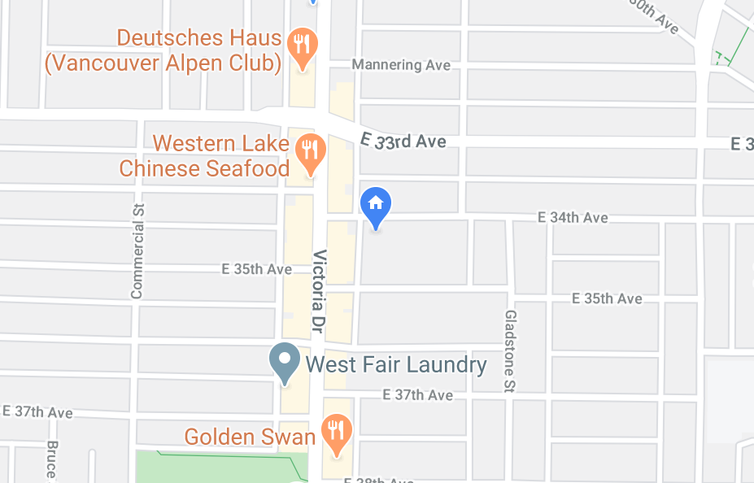
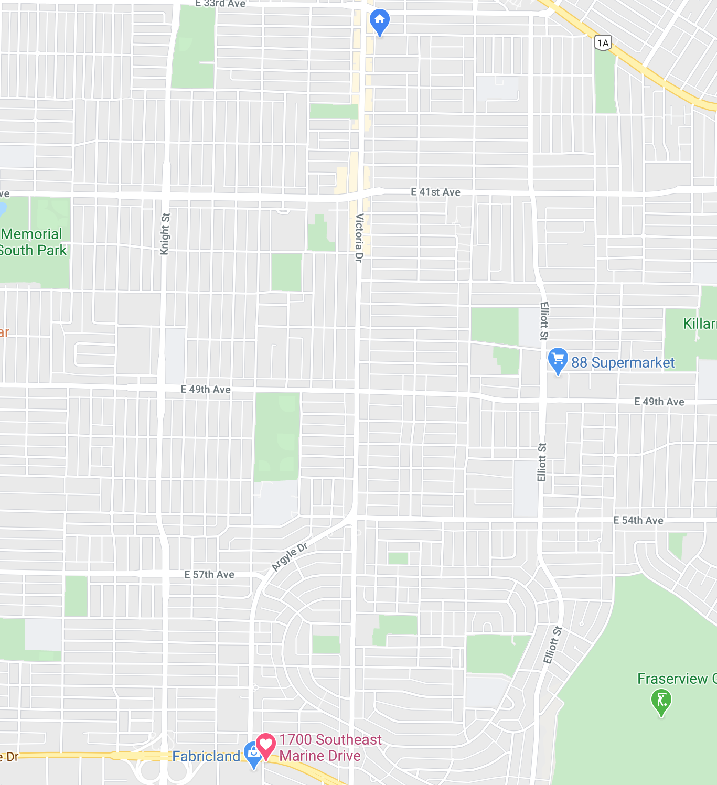

Scroll Down
⮟
To My Dearest Friend Lyradale Padernal,
Daughter of Uncle Michael Linson Padernal and Auntie Rachel Ching Padernal, Sister of Che.
I do hope that life is treating her well.
It has been months since we have last crossed paths.
Oh how lonely this world is without Lyradale Padernal.

The weekly zoom meetings are not enough to find her in this big big world.
The only way I can find her is if I ZOOM out. Wayyyyy out.

But alas, we shall meet again after the quarantine. (or perhaps in heaven (hopefully))
Life won't be the same after this, but I know Lyradale Padernal will still be the same.
She can be tough sometimes because of her reserved nature, but that just adds to her charm.
My quiet demeanor sometimes leaves me unnoticed by others, but Lyradale Padernal notices me.
Some may say there's 7 wonders of the world, but there's actually an 8th. Lyradale Padernal.
When God said "Let there be light" he created the sun and Lyradale Padernal.
Lyradale Padernal can talk to anyone. When she was a child she asked a stranger about his private parts.
If someone is looking for a perfect wife I will tell them Lyradale Padernal.
Kindness, caringness, lovingness, cleanliness, genourosness are just some words to describe Lyradale Padernal.
That is the end of my letter, hopefully not the end of my friendship with Lyradale Padernal.
I hope this letter will bring a smile to Lyradale Padernal
This message was brought to you by Michael Paul San Juan.